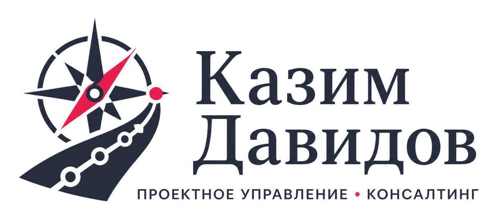

Обо мне
Создаю системы управления проектами и операциями, которые работают после моего ухода

Более 11 лет управляю проектами, портфелями и проектными офисами, а также операционной деятельностью в высокотехнологичных отраслях. Работал в областях искусственного интеллекта, квантовых технологий, генетики, R&D и высоких технологий.
Строил проектное управление с нуля: проектировал оргструктуру, процессы, методологию по стандарту PMI, системы KPI, отчётности и мониторинга. Управлял распределёнными командами 300+ специалистов в трёх странах и портфелями проектов федерального и межгосударственного масштаба.
Помимо проектного управления, занимаюсь операционной эффективностью: реинжиниринг сквозных бизнес-процессов, оптимизация оргструктуры, построение систем KPI и управленческой отчётности. Соединяю стратегию, процессы, данные и людей.
Вице-эксперт по проектному управлению в международной межгосударственной структуре. Работал с международными фондами и инвесторами, выстраивал партнёрские экосистемы в России, Индии, Бразилии, Катаре и странах Персидского залива.
Коротко
- Роли: руководитель проектов · руководитель портфеля проектов · руководитель проектного офиса (PMO) · операционное управление (COO)
- Опыт: 11+ лет
- Максимальный портфель: до 800 млрд ₽
- Команда: 300+ специалистов в 3 странах
- Локация: Москва · возможен переезд · командировки
- Языки: русский (родной), английский (B2)
Опыт работы
Карьера в проектном и операционном управлении
Частная практика (консалтинг) — директор проектов
Стратегическое управление и развитие проектов
- Разработка стратегий и дорожных карт для проектов разного масштаба — от стартапов до федеральных программ.
- Антикризисное управление проектами с высоким уровнем риска и большим количеством взаимосвязей.
- Проектирование и внедрение эффективных организационных структур.
Управление проектами и аудит
- Полный цикл управления проектами — от инициации до закрытия.
- Комплексный аудит проектной деятельности, включая федеральные и холдинговые проекты.
- Международная экспансия проектов и налаживание кросс-культурного сотрудничества.
Клиенты (~10, все крупные): компания из топ-3 российской промышленности, крупнейший маркетплейс, международная аудиторская компания (Big 4), глобальная инжиниринговая корпорация. Форматы — от разового проекта до сопровождения; сроки — от месяца до года, оптимально 3–12 месяцев.
Ключевые результаты: PMO «с нуля» и проектный департамент для компании «Алабуга» (27 000 сотрудников, портфель проектов 800+ млрд ₽, проектный офис ~100 человек: задачи быстрее на 40–45%, расходы ниже на 15–20%); аудит проектной деятельности крупнейшего маркетплейса (17 точек роста, рекомендации по снижению затрат на 15%); стратегия регионального развития (60 млрд ₽ на 5 лет); программа релокации для глобальной инжиниринговой корпорации.
Руководитель портфеля проектов
- Руководство федеральными и межгосударственными проектами на всех стадиях: генетика, ИИ, High-Tech, АПК.
- Операционное руководство кластером из 5 подразделений (научный, технологический, аналитический, ВЭД, производственная кооперация).
- Масштаб: отдел 800 человек, проектный офис 175–178, 300+ в проектной работе в Индии, Саудовской Аравии и Катаре.
- Портфель из 5 проектов циклом от 1 до 5 лет; созданный проект — 170+ млрд ₽.
- Реорганизация оргструктуры с внедрением методологии PMI, системы KPI и обязательной отчётности: хаос отдела из 800 человек превращён в единую работающую структуру.
- Взаимодействие с международными фондами и экспертами из России, ЕС, Индии, Ближнего Востока, США; допуски и разрешения — через отделы ВЭД и СБ.
Ключевые результаты: ускорение выполнения задач на 40–45%; обработка запросов — с 21–27 до 3–7 дней; задачи на человека — с 60 до 12; создан международный геномный центр мирового уровня; портфель, сопоставимый по масштабу с атомными проектами; обоснован отказ от мегапроекта с бюджетом $30+ млрд (группа из 30 экспертов); международная сеть — сотни учёных редких специальностей и тысячи технологий.
Предшествующий опыт — инновационные проекты, аналитика, инвестиции
- Руководитель инновационных проектов: научно-техническая кооперация, поиск и анализ технологий, закупка лицензий, ноу-хау и инженерных услуг, управление жизненным циклом проекта по PMBOK.
- Руководитель информационно-аналитического отдела: управление международными проектами и привлечение инвестиций, руководство аналитической группой, Due Diligence, развитие бизнес-клуба, переговоры с ЛПР.
- Менеджер проектов: информационно-аналитическая деятельность в области высоких технологий, разработка бизнес-стратегий, бизнес-планов и исследований рынка.
Ключевые результаты: инвестпроекты на $103 млн с положительным решением; $10 млн — проект, где я был руководителем и решение принято на основе моих данных; $220 млн — инвестиции, по которым я был экспертом и аналитиком; участие в проекте «Блокчейн-технологии» ($100 млн); привлечено 150+ учёных, 15 проектов — 3 получили финансирование; апробация технологии переработки алюминия — 360 млн ₽; собрана база экономических индексов.
Ключевые достижения
Результаты, которые можно измерить
Проектное управление
- Создал проектный департамент и PMO «с нуля» для крупной промышленной компании (27 000 сотрудников, портфель 800+ млрд ₽): проектный офис ~100 человек, в прямом подчинении 30–45; 100+ проектов объединены в портфели со строгой системой управления, контроля и мониторинга.
- Внедрил методологию PMI и систему отчётности в распределённой команде (3 страны).
- Провёл аудит проектной деятельности крупнейшего маркетплейса — 17 точек роста.
- Провёл комплексную оценку мегапроекта с бюджетом $30+ млрд и обосновал отказ от запуска.
Операционная эффективность
- Повысил операционную эффективность кластера на 40–45% за счёт реинжиниринга процессов и внедрения KPI; снизил расходы на 15–20%.
- Сократил рабочий день с 12 до 9 часов без потери пропускной способности: обработка запросов — с 21–27 до 3–7 дней, создание КП — с 7 до 3 дней.
- Снизил число задач на одного сотрудника с 60 до 12 без потери результата.
- Создал систему перевода сотрудников на другие специальности внутри компании — при реорганизации не был уволен ни один человек, система работает до сих пор.
Международный опыт
- Вице-эксперт по проектному управлению в международной межгосударственной структуре.
- Работа с проектами и партнёрами в 5 странах: Россия, Индия, Бразилия, Катар, страны Персидского залива.
- Создал международную сеть поиска технологий и специалистов: тысячи технологий, сотни учёных и экспертов редких областей.
Инвестиции и аналитика
- Привлёк инвестиции от международных инвесторов на сумму более $10 млн и содействовал привлечению $220 млн.
- Проанализировал сотни проектов с положительным решением об инвестициях на $103 млн.
- Разработал и внедрил базу экономических индексов, интегрированную в аналитику Центрального банка РФ.
Компетенции
Навыки и инструменты
Методологии управления
Инструменты
Управленческие компетенции
Отраслевая экспертиза
Образование
РАНХиГС при Президенте РФ, Москва, 2019.
Факультет государственного и муниципального управления, специальность «Мировая экономика», экономист.
Дополнительное обучение
«Менеджер проектов. Управление проектами» — Академия Синергия, 2023 (250 ак. часов).
«Руководитель проектного офиса. Управление портфелем проектов» — МГТУ им. Баумана, 2025.
Сертификация PMP, PME и IPMA Level A — запланирована на 2027 год.
Языки и формат
Русский — родной (C2). Английский — B2 (средне-продвинутый).
Москва, возможен переезд. Полная занятость, гибрид, удалённо, разъездная работа, командировки.
Обсудим вашу задачу?
Опишите ситуацию — предложу формат работы и реалистичный план. Первичный разбор задачи — бесплатно.